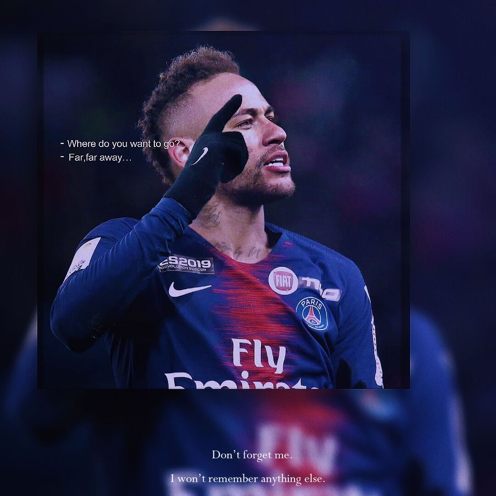
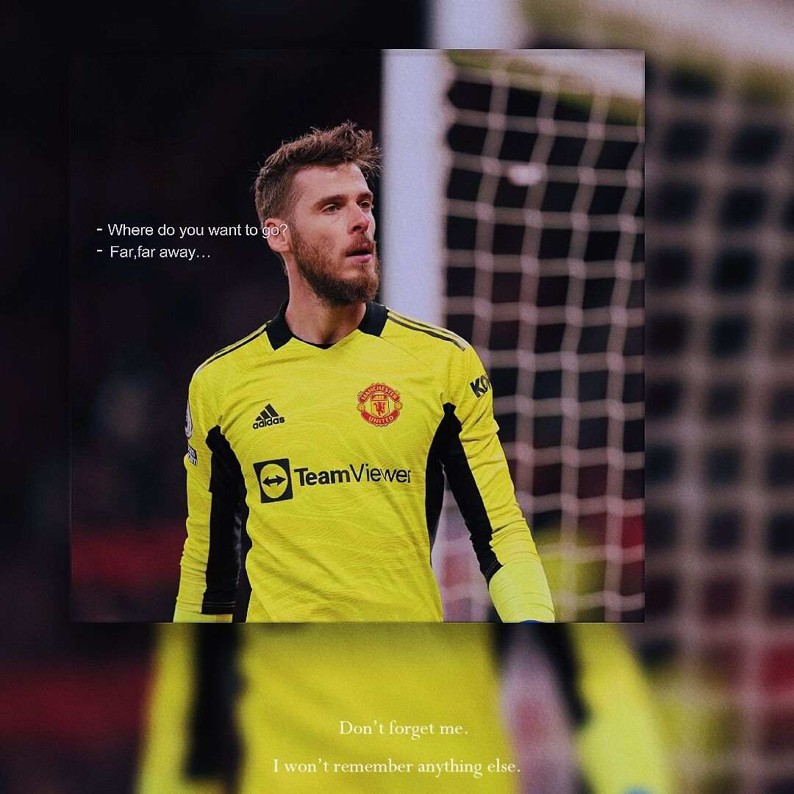

同学请发言
 CRIOS
CRIOS
发布

- 阿伟 留言于 2021-06-32 09:19
- 回复
真不错

- 冰糖可乐 留言于 2020-06-28 02:10
- 回复
@coco 关于代码高亮的问题： 我 cdn 引入的是 highlight.js 的高亮规则，我后台写博文时用的 markdown 组件(mavonEditor)它也是支持生成带高亮规则类名的 html 模板，所以在前台展示的时会生效高亮效果。😄，你的没有高亮我估计是你的代码片段元素没有相应的类名。(可以审查一下我的博文的代码片段的元素的类名，都是 hljs-xxx 这样的)
最新留言
- 阿伟 2021-06-29 09:16
- 真不错
- 阿利 2020-08-09 13:03
- 真不错

- 冰糖可乐 2021-09-19 02:19
- 针不戳
- Fals 2022-09-03 16:16
- nice
博客由来
这是一个前端热爱学习者,为了完成老师布置的前端大作业
临时完的博客成的一个前端静态博客网站
当然,后续技术成熟后,
我也会沿用这个已经搭建好大致框架~
- 相关链接
- 博文
- 旅行
- 关于
- 关于我
- 关于博客
代码已托管至 Github,完全开源
2018 一 2022 © gkshi
蜀ICP备20221009103号